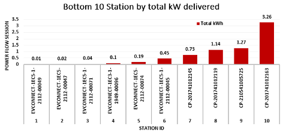
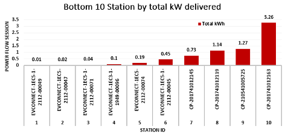

EV Charging Infrastructure Performance Evaluation
Overview: This project evaluates the operational performance of 305 EV stations across 41 months. Key outcomes include bottleneck identification, power efficiency analysis, and resilience modeling.
Scope and Methodology
- Stations: 305 monitored
- Sessions: 17,500+
- Time Period: 41 months
- Key Metrics: Utilization, power loss, CO₂ savings
- Techniques: Correlation analysis, regression, Monte Carlo simulation

Performance Highlights
Power Loss
27% of stations experienced active session failure
Idle Time
38%+ average idle time in urban zones
Provider Risk
ChargePoint handled 80% of energy, posing a 19% risk if it fails


Environmental Impact
CO₂ Saved: Up to 120 tons/month using renewable-powered EV stations.
Based on U.S. EPA’s 0.43 kg CO₂/kWh factor

Station Rankings
We identified the top and bottom performers in terms of energy efficiency and utilization:
 

Key Recommendations
- Enable predictive maintenance alerts using ML
- Diversify charging network operators
- Incentivize solar-PV integration with fast-charging
- Adopt dynamic scheduling based on real-time demand
Publication
Title: Data-Driven Insights for Optimizing EV Charging Infrastructure
Status: Under Review @ Global Energy Interconnection
Manuscript ID: GLOEI-D-24-00369R1